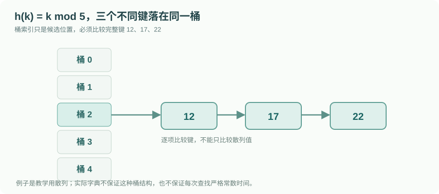
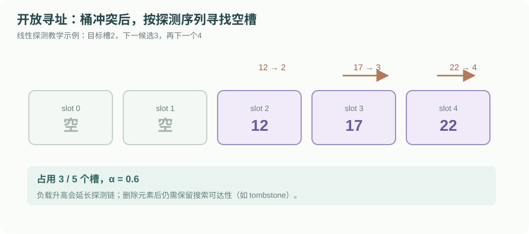
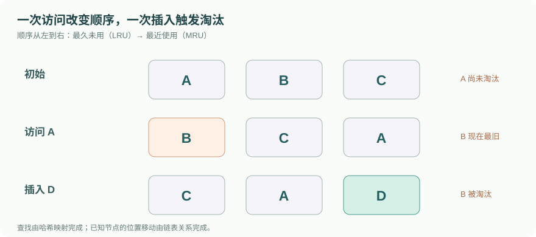

哈希表：冲突、负载因子与 LRU 缓存
查找能快到预期 O(1)，不是因为没有冲突，而是因为设计了冲突处理、负载控制和完整的键相等判断。再把散列映射与双向链表组合，就能实现按最近使用淘汰。
按键读取：为什么逐个比较不是唯一办法？
设一个在线商店保存 user_id → 购物车，每次请求都要通过用户 ID 找到购物车。如果把所有记录放在一个未排序数组里并线性扫描，最坏需要检查 n 个用户；当请求次数远大于数据构建次数时，按键定位比按位置存储更重要。
哈希表（hash table）的思路是：先把键 k 映射为一个整数摘要 h(k)，再通过桶数 m 计算 h(k) mod m，定位到一个候选桶。但这只把“到哪个桶找”变快了，不保证每个桶恰好一个元素。
散列冲突不可避免：同一个桶里怎么办？
假设桶数 m=5，对整数键用教学用散列 h(k)=k % 5。键 12、17、22 都映射到桶 2。这是完全正常的冲突。不能因为桶索引相同就把它们当成一个键；查询时仍要比较完整键值。

def toy_bucket(key, bucket_count=5):
if bucket_count <= 0:
raise ValueError("bucket count must be positive")
return key % bucket_count
assert [toy_bucket(k) for k in (12, 17, 22)] == [2, 2, 2]拉链法（separate chaining）使每个桶保存一个可增长的键值集合。若哈希函数能有效分散键、负载受控，查找的预期时间常记为 O(1)；若攻击者构造大量碰撞、或桶链过长，最坏仍可能 O(n)。这也是哈希表的常数时间不能脱离概率假设和实现细节随意宣称的原因。
负载因子：为什么需要扩容与重散列？
负载因子定义为 α = n / m，其中 n 是已保存的键数、m 是桶（或表槽）数。例如 8 个键放进 10 个桶，负载因子是 0.8。拉链法允许 α 超过 1；开放寻址法若所有槽都已占用就无法插入，需要保留空位并管理已删除槽。
动态扩容通常重新分配更大的桶数组，再根据新桶数重新计算键的目标位置（rehashing）。所以单次插入可能耗费 O(n)，但在合适扩容策略下，许多插入操作的总成本仍可得到均摊良好保证。真实 dict 的容量策略、探测策略不等于这里的简化模型。
两种冲突解决路线：链表与开放寻址
拉链法在桶内放一个集合/链；开放寻址法则把所有键值对直接放在同一张槽位数组中。当目标槽被别的键占用，使用探测序列寻找其他空槽。线性探测是最容易理解的示例：目标是 h(k)%m，若占用则尝试 (h(k)+1)%m，再尝试 (h(k)+2)%m，直到找到匹配键或可插入槽。

| 方法 | 碰撞时如何处理 | 工程注意点 |
|---|---|---|
| 拉链法 | 在桶内比较完整键 | 节点/集合开销，极端冲突链过长 |
| 开放寻址 | 在表内寻找另一可用槽 | 负载高时探测长度增长，删除需特殊处理 |
| 扩容重散列 | 重建新容量下的位置 | 一次成本可能线性，但可摊销 |
开放寻址使用删除标记（tombstone）时不能直接把槽当成“从未使用”，否则可能使本来位于后续探测位置的键突然无法被找到。不同探测策略有不同的聚集和缓存局部性特点。
Python 字典：键的相等性与哈希必须一致
Python 的 dict 和 set 使用哈希式键访问。键必须可哈希，且在作为键期间其哈希和相等性语义要稳定。若 a == b，必须有 hash(a) == hash(b)；反过来 hash 值相同并不意味着两个对象相等。
users = {"u-17": "cart-A", "u-22": "cart-B"}
assert users["u-17"] == "cart-A"
pairs = {(1, 2): "edge"}
assert pairs[(1, 2)] == "edge"
try:
users[["mutable", "list"]] = "invalid"
except TypeError:
pass
else:
raise AssertionError("list must not be a dict key")现代 Python 字典保证插入顺序（语言层面自 Python 3.7 起）。插入顺序不是访问顺序：单纯执行 users["u-17"] 不会把该项移动到末尾。想实现“最近访问者优先保留”的 LRU 缓存，还需要维护独立的最近使用顺序。
用映射把两数之和从 O(n²) 降到预期 O(n)
给定无序数组 nums 和目标 target，若求两个不同下标的元素之和等于 target，暴力方法会检查位置对。遍历到元素 x 时，只要查询之前是否出现过 target−x 即可。重要不变量：映射只保存当前下标之前的元素，避免同一元素被使用两次。
def two_sum_unsorted(nums, target):
seen = {}
for i, x in enumerate(nums):
complement = target - x
if complement in seen:
return (seen[complement], i)
seen[x] = i
return None
assert two_sum_unsorted([2, 7, 11, 15], 9) == (0, 1)
assert two_sum_unsorted([3, 3], 6) == (0, 1)
assert two_sum_unsorted([3], 6) is None在常见哈希分布模型下，时间预期 O(n)，额外空间 O(n)。它与第三章的“有序数组双指针”各有条件：前者无需排序、换取额外空间；后者依赖有序性、空间可 O(1)。
LRU 缓存：按键查找与最近使用排序的组合
假设缓存最多保存 3 个键。初始使用顺序从旧到新为 A,B,C。访问 A 后应变为 B,C,A；此时插入 D，要淘汰最久未用的 B，得到 C,A,D。这不是哈希表天然能完成的操作：哈希表负责找到一个键对应的节点，双向链表负责把已知节点移到尾部和从头部删除。

from collections import OrderedDict
class LRUCache:
def __init__(self, capacity):
if capacity <= 0:
raise ValueError("capacity must be positive")
self.capacity = capacity
self.entries = OrderedDict()
def get(self, key):
if key not in self.entries:
return None # 教学设计：缓存不存储 None
self.entries.move_to_end(key)
return self.entries[key]
def put(self, key, value):
self.entries[key] = value
self.entries.move_to_end(key)
if len(self.entries) > self.capacity:
self.entries.popitem(last=False)
cache = LRUCache(3)
for k in ("A", "B", "C"):
cache.put(k, k.lower())
assert cache.get("A") == "a"
cache.put("D", "d")
assert list(cache.entries) == ["C", "A", "D"]示例使用标准库 OrderedDict 表达 LRU 语义，而非声称它源码必须由某个特定双向节点类实现。在哈希查找和端点移动都具备期望常数代价的条件下，get/put 可达到预期 O(1)。当值允许是 None 时，必须为缓存未命中设计独立的标志，不能仅靠返回 None 判定。
模拟一个小散列表
容量为 5，使用教学散列 h(k)=k mod 5。选择一个键，查看其桶及碰撞关系。
工程检查：正确性、安全性与“看起来 O(1)”
小测试要覆盖重复键更新、冲突、删除再插入、扩容后找回全部元素、哈希相等但键不相等、缓存容量为 1、访问已存在键与缺失键。若输入来自外部不可信客户端，还需要考虑哈希碰撞拒绝服务风险及键的大小、计算成本。
最后区分四种语义：直接用整数索引的数组、按完整键查找的哈希表、有序键范围查询的树、按使用顺序淘汰的缓存。下一章的树提供层次化组织和遍历，之后的平衡搜索树则会把顺序约束与可搜索性联系起来。
带走三个判断准则
- 桶索引相同不意味着键相等；哈希表的预期常数时间依赖分布、负载、冲突策略和键的计算成本。
- 平均/预期复杂度描述分布，均摊复杂度描述操作序列；单次扩容仍可能很慢。
- LRU 需要同时支持按键定位和按访问顺序移动，单纯 Python dict 的插入顺序不足以表达最近使用顺序。
继续学习与校验资料
- Python 字典官方文档 — 键与插入顺序的语言保证
- Python Data Model — 哈希与相等性约束
- OrderedDict — 访问后移动与淘汰的接口
- MIT 6.006 — Hashing 的建模和复杂度